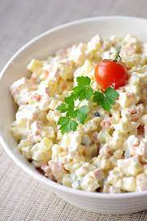

Estonian Potato Salad

A fresh and filling potato salad for any occasion!
This will be a hit at any get together for its fresh and delicious taste, this is the traditional Estonian take on potato salad!
Ingredients
- 4 - 5 boiled potatoes
- 2 medium-sized boiled potatoes
- 1 boiled egg
- 100 g of boiled sausage
- 1 apple
- 1/2 cucumber
- 100 g of peas
- 200 g of sour cream
- 200 g of mild mayonnaise
- Salt
- Pepper
Step by Step Directions
- Boil potatoes and carrots in salted water
- Peel potatoes and chop into fine cubes after cooldown
- chop carrots, apples, sausage into fine cubes
- mix all together and add peas
- mix in sour cream and mayonnaise together
- season with salt and pepper to taste
- let sit for a couple of hours